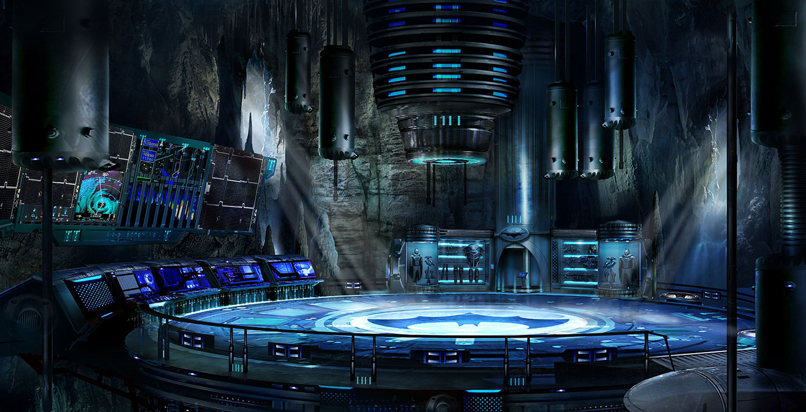
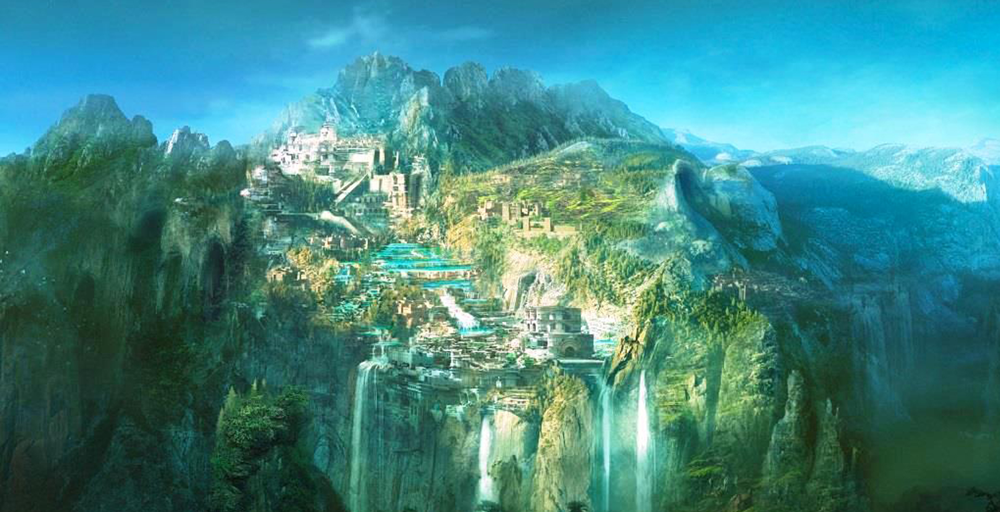

Batman
Bruce Wayne es el único personaje que se identifica como Batman y aparece en Batman, Detective Comics, Batman y Robin, y Batman: The Dark Knight. Dick Grayson vuelve al manto de Nightwing.
Ver Más

Mujer Maravilla
La Mujer Maravilla es una superheroína ficticia creada por William Moulton Marston para la editorial DC Comics. Es una princesa guerrera de las Amazonas, pueblo ficticio basado en el de las amazonas de la mitología griega.
Ver Más

Superman
Clark Kent, también conocido por su nombre de nacimiento Kal-El o por su nombre de superhéroe Superman, es un personaje ficticio y superhéroe de las películas del Universo extendido de DC, basado en el personaje del mismo nombre creado por Jerry Siegel y Joe Shuster.
Ver Más